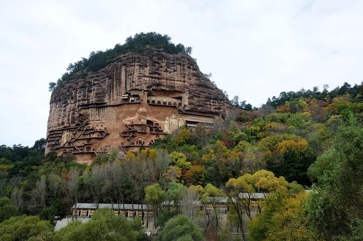
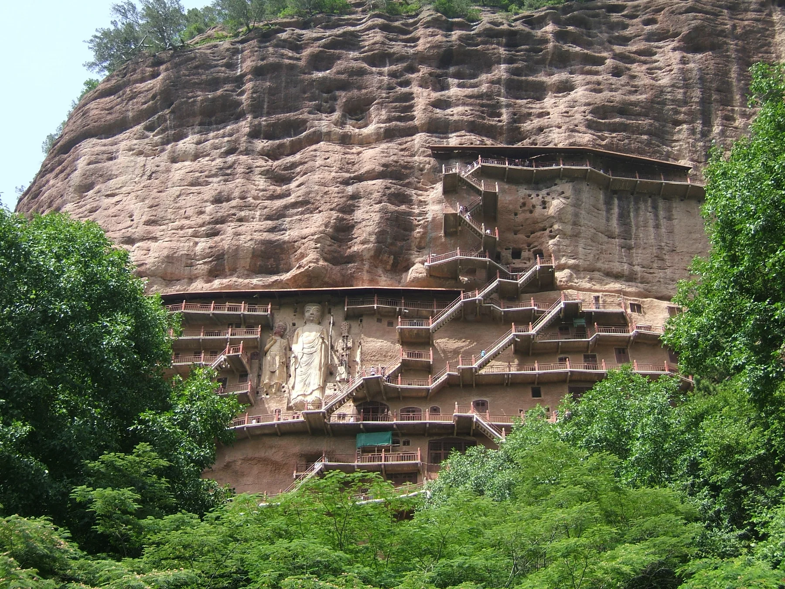
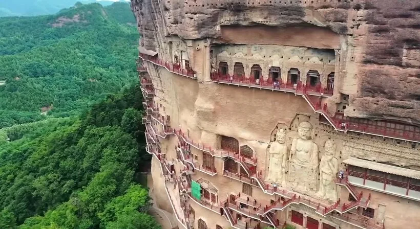
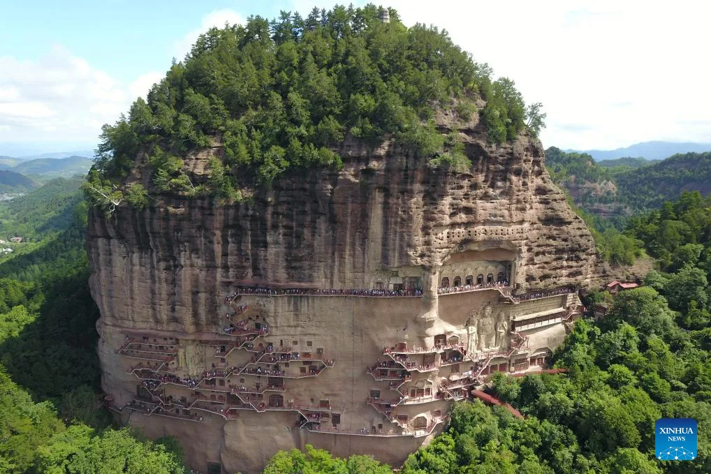
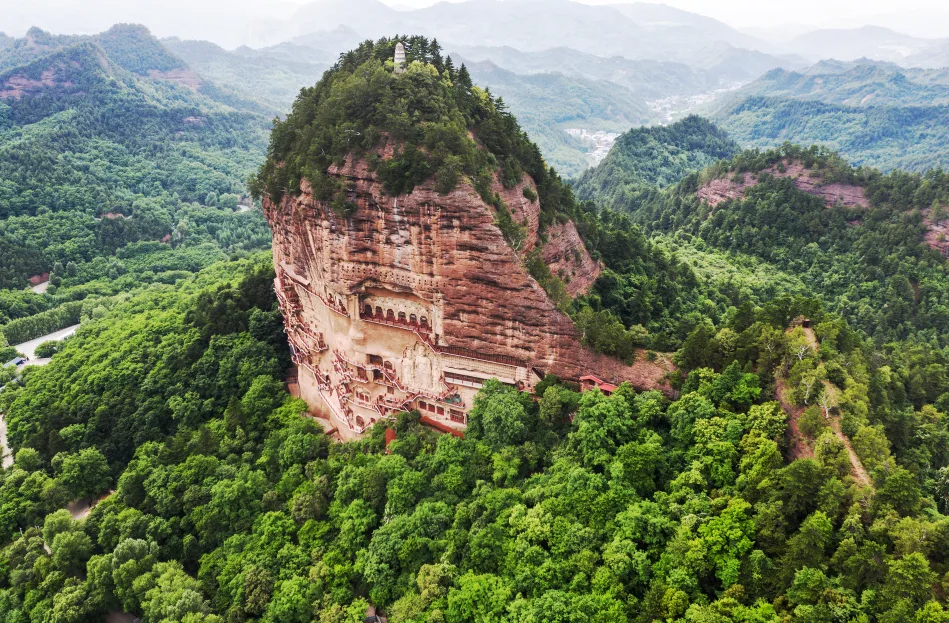

Майцзишань 麦积山
Майцзишань , «Пшеничная гора» — пещерно-храмовый комплекс, один из крупнейших буддийских пещерных монастырей Китая в форме муравейника 142-х метровой высоты. Располагается в провинции Ганьсу в районе Майцзи городского округа Тяньшуй. Начало монашеской жизни и строительства первых пещер относят к периоду династии Поздняя Цинь (384—417).
Всего в горе расположено 194 грота: 54 — на востоке, 140 — на западе. Они высечены на южном склоне горы, на высоте 80 м от подножья. Внутри находится более 7200 глиняных и каменных скульптур, свыше 1300 м². фресок, которые были созданы с IV по XIX век. Здесь можно проследить этапы развития скульптурного искусства в Китае. Кроме скульптур, здесь было обнаружено более 2000 предметов из керамики, бронзы, железа и яшмы, древние книги, документы, картины и работы каллиграфов. Самая высокая скульптура достигает 16 м. Из одной пещеры в другую можно попасть только по деревянной дорожке, проходящей над обрывом.
В 2014 году Пещерно-храмовый комплекс Майцзишань внесён в Список всемирного наследия ЮНЕСКО как часть объекта «Шёлковый путь: сеть маршрутов коридора Чанъань-Тяньшань»[1].





К оглавлению